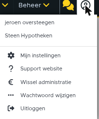
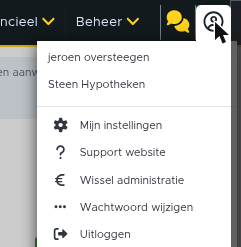
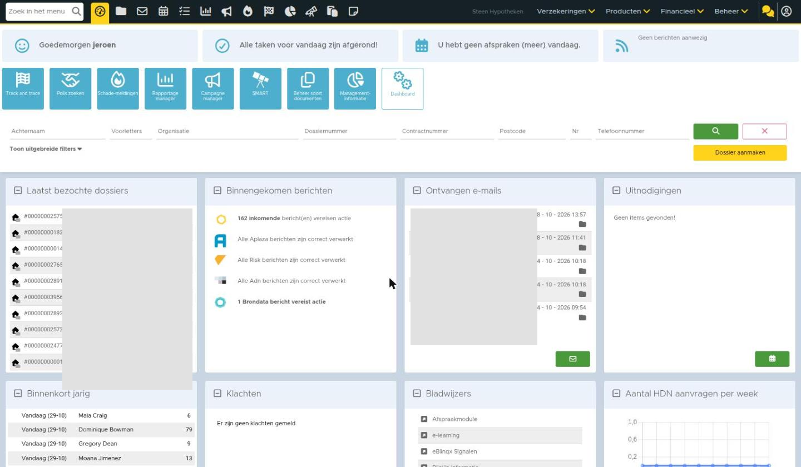

Dashboard inrichten
Dashboard
Het dashboard is de startpagina van je dag. Daarom is het belangrijk om deze in te richten naar jouw wensen.
Hieronder lees je meer over mogelijkheden, de symbolen en tegels op het dashboard. De snelkoppelingen en tegels zijn in te stellen via de knop 'Dashboard Instellingen'
Snelkoppelingen
De pictogrammen zijn snelkoppelingen. De snelkoppelingen zijn zelf in te stellen door onder 'Dashboard Instellingen' de gewenste snelkoppeling van links naar rechts te slepen. Aan de linkerzijde zie je de snelkoppelingen die niet zichtbaar zijn. De snelkoppelingen aan de rechterzijde zie je terug op je dashboard.


Tegels
Via de knop 'Dashboard instellingen' op je dashboard kun ook je de actieve tegels wijzigen. Als je een tegel op je dashboard wilt zien, sleep je deze van links naar rechts.

Ook is het mogelijk om een eigen tegel op het eBlinqx dashboard van je kantoor toe te voegen. Hierin kan je informatie tonen die je kantoor zelf beheert. Hiervoor dien je zelf een webpagina te maken waarin de informatie staat wat je in de tegel wilt weergeven. Vervolgens kun je de URL van de pagina insturen naar support-eblinqx@blinqx.tech. Nadat deze ingesteld is, haalt eBlinqx de informatie van de desbetreffende pagina op.
Laatst bezochte dossiers
In de tegel 'Laatst bezochte dossiers' vind je de dossiers die je voor het laatst bezocht hebt. De namen die je hier ziet staan, zijn de namen die gevuld zijn in de 'Dossier instellingen - Omschrijving'. Deze kan je benaderen via het hamburgermenu in de header.
Actuele rentestanden
De Nationale Hypotheekbond levert tegels met actuele hypotheekrentes.
- Top 10 hypotheekrentes NHG 20 jaar
- Top 10 hypotheekrentes 20 jaar
Let op! Deze gegevens worden gevuld door Hypotheekbond. Indien er afwijkingen zijn in de resultaten kun je met Hypotheekbond contact opnemen.
Bladwijzers
Een tegel die je zelf kan aanpassen, is de tegel met bladwijzers. Via de knop rechtsonder op de tegel kies je de gewenste bladwijzers.

In de 'Bladwijzers' pop-up kun je bladwijzers aanpassen (via het wijzigingsicoon), toevoegen (via het plusicoon) en verwijderen (via het rode kruisje).
Modules in menubalk
Bovenaan de pagina staan een aantal symbolen die je snel naar een module leiden.
Van links naar rechts worden de volgende symbolen getoond:
- 'Zoek in het menu' : typ hier jouw zoekopdracht in om sneller hetgeen te vinden waar je naar zoekt. Voorbeeld: je zoekt 'organisatie & personen' - type in de zoekbalk 'organisatie' - door op enter te drukken wordt 'organisatie & personen' gelijk geopend.
- Dossiericoon: overzicht van de 10 laatst bezochte dossiers en zoeken naar dossiers. Klik hier voor meer uitleg over dossiers in eBlinqx.
- E-mail: openen van de e-mailmodule.
- Kalender/Agenda: openen van jouw agenda.
- Takenoverzicht: overzicht van alle taken.
- Urenregistratie: zichtbaar indien je gebruik maakt van personeelsdossiers en urensheets.
- Rapportage manager: overzicht van alle bestaande rapportages in jouw eBlinqxomgeving.
- Campagnemanager: hier kan je een mailing aanmaken om bijvoorbeeld een nieuwsbrief naar alle klanten te versturen.
- Schademelding: overzicht en filter van de schademeldingen indien je gebruik maakt van de schademodule.
- Track and Trace: overzicht van al jouw lopende producten
- Vragensysteem: zichtbaar indien je gebruik maakt van een ticketbox bij een supportafdeling
- Klembord: hier vind je alle zaken die je op het klembord geplaatst hebt
- Notities: dit is jouw persoonlijke kladblok in eBlinqx. Hier kan je vanuit iedere pagina in eBlinqx bij.
Megamenu rechtsboven
Deze buttons vind je aan de rechterkant van het menubalk. Door met jouw muis op een van de woorden te gaan staan, krijg je een submenu met daarin alle functionaliteiten en beheerdersfuncties waar je rechten toe hebt.
Instellingen gebruiker
Helemaal rechts in de menubalk vind je een drop-down menu met gebruiker gerelateerde links. Bijvoorbeeld: “Mijn instellingen” en “Uitloggen”. Daarnaast vind je daar een directe link naar de supportwebsite.


Tegels op het dashboard
Tegel niet beschikbaar
Heb je geen rechten tot een module, bijvoorbeeld de Verkenner, dan is de tegel van die module ook niet beschikbaar om aan je dashboard toe te voegen. Je ziet de tegel dan niet.
Tegel verbergen
Wil je een tegel niet meer zien, dan stel je dit zelf in. Ga via de snelkoppeling Dashboard naar de instellingen van je dashboard en verschuif de tegel naar Beschikbare tegels.
Tegel Taken
Op het dashboard staat een tegel met je openstaande taken voor vandaag. Als je met je muis op de tegel gaat staan, zie je hoeveel verlopen taken er zijn. Dit zijn alle taken die tussen een half jaar geleden en gisteren zijn verlopen. Het gaat zowel om persoonlijke taken (op jouw naam) als om groepstaken van een workflowgroep waar je in zit.
De inhoud van deze tegel wordt niet direct bijgewerkt, maar blijft 5 minuten bewaard. Wil je zeker weten dat je de actuele stand ziet, vernieuw de pagina dan geforceerd met CTRL + F5.
Tegel Binnenkort jarig
Het kan zijn dat dezelfde persoon meerdere keren in de tegel Binnenkort jarig staat. Dit komt doordat de tegel naar de dossiers kijkt en niet naar hoe vaak een persoon in eBlinqx Connect voorkomt. Komt een persoon in meerdere dossiers voor, dan staat hij er meerdere keren in. Je kunt in de tegel op de naam klikken om naar het betreffende dossier te gaan.
Eigen tegel
Je kunt ook een eigen tegel laten maken met informatie die je zelf kiest. Je maakt hiervoor zelf een webpagina met de informatie die je in de tegel wilt tonen. Stuur de URL van deze pagina naar support (support-eblinqx@blinqx.tech). Nadat de tegel is ingesteld, haalt eBlinqx Connect de informatie van die pagina op. Let op: de URL moet de vorm hebben van https://www.website.nl/pagina.php.
Donkere modus
eBlinqx Connect heeft (op korte termijn) geen donkere modus. Je kunt wel op een andere manier een donkere weergave gebruiken, bijvoorbeeld met de browserextensie Dark Reader of met de browser Comet van Perplexity.
Zo ziet het er nu uit in eBlinqx Connect
